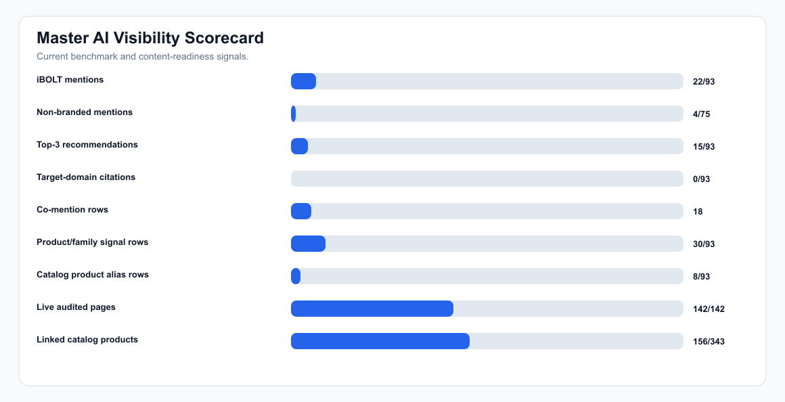
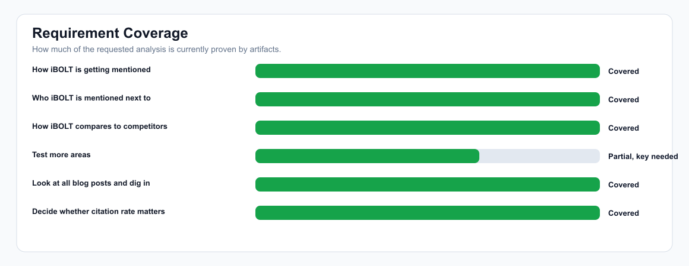
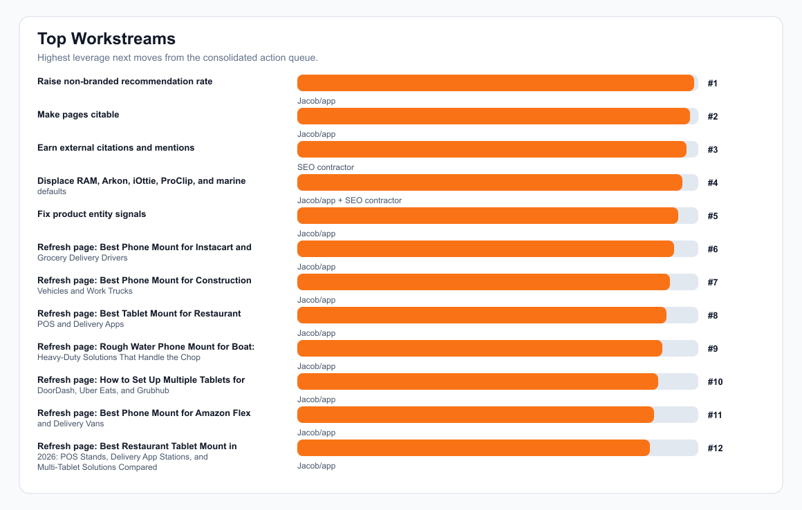

iBOLT AI Visibility Master Dossier
This is the consolidated package for AI visibility, competitor displacement, citations, and blog/post readiness. It combines raw answer text, competitor co-mentions, benchmark gaps, live page citability, product spread, and all-post refresh priorities.
AI answers tested
93
Saved benchmark run
iBOLT mention rate
22/93 (24%)
All prompts
Non-branded mention rate
4/75 (5%)
Generic buyer prompts
Top-3 recommendation rate
15/93 (16%)
Recommendation quality
Target-domain citation rate
0/93 (0%)
Citation quality
Competitor-only rows
68
Answers that mention competitors without iBOLT
Co-mention rows
18
Answers where iBOLT appears alongside competitors
Product/family signal rows
30/93
TabDock, BizMount, AMPS, xProDock, etc.
Main read: iBOLT is visible when named, but generic buyer prompts still default to competitors. The path is page refreshes plus external citation growth, then an expanded benchmark rerun.
Master Dashboard



Requirement Coverage
| Requirement | Status | Evidence | Next Action |
|---|---|---|---|
| How iBOLT is getting mentioned | Covered | 22/93 total mentions, 4/75 non-branded mentions, 30/93 product/family signals, and 8/93 actual catalog product alias rows. | Use answer excerpts to preserve the phrases AI already associates with iBOLT, then strengthen missing product names. |
| Who iBOLT is mentioned next to | Covered | Co-mention and raw answer text show RAM Mounts, Arkon, iOttie, CTA Digital, ProClip, Humminbird, Mount-It, and Scosche as the main neighboring/default brands. | Use competitor-adjacent comparison blocks and external mentions to make iBOLT appear in the same consideration sets. |
| How iBOLT compares to competitors | Covered | RAM Mounts: 53 without iBOLT; Arkon: 25 without iBOLT; iOttie: 15 without iBOLT; ProClip: 12 without iBOLT; Humminbird: 12 without iBOLT; Scosche: 9 without iBOLT. | Refresh pages with fair tradeoff language around specialist modular systems, secure mounts, and commercial use cases. |
| Test more areas | Partially covered, credential-limited | Current completed run covers 93 answers across 31 query groups and 21 provider/category slices. Expanded 207-prompt backlog exists but local shell lacks OPENROUTER_API_KEY. | Set OPENROUTER_API_KEY in the local shell and run the expanded one-at-a-time benchmark. |
| Look at all blog posts and dig in | Covered | 106 local posts, 106 Shopify-synced posts, 142/142 live sitemap pages successfully audited, 0 unavailable after merged crawls, and 106 all-post action rows audited. | Execute the page refresh queue, duplicate consolidation plan, and product-linking plan in priority order. |
| Decide whether citation rate matters | Covered | 0/93 target-domain citations and 0 rows with source URLs. Citation work is necessary for search-connected AI surfaces, while mention/recommendation rate is the first bottleneck. | Offload external citation growth to the SEO contractor while the app handles schema/content refreshes. |
Competitors And Product Signals
| Competitor | Raw Answer Appearances |
|---|---|
| RAM Mounts | 63 |
| Arkon | 30 |
| iOttie | 18 |
| CTA Digital | 17 |
| ProClip | 13 |
| Humminbird | 12 |
| Mount-It | 11 |
| Scosche | 9 |
| Garmin | 8 |
| Scotty | 8 |
| Lowrance | 7 |
| Tackform | 7 |
| Product/Category Signal | Raw Answer Appearances |
|---|---|
| TabDock | 13 |
| BizMount | 12 |
| AMPS | 11 |
| VESA | 8 |
| xProDock | 4 |
| Dock'n Lock / Dock’n Lock | 3 |
| Garmin Striker | 2 |
| Universal Marine Mounting Plate | 1 |
| Actual Catalog Product Alias | Raw Answer Appearances |
|---|---|
| iBOLT™ TabDock™ Bizmount™ AMPs | 6 |
| iBOLT™ Dock'n Lock - Composite Locking Tablet Holder- AMPS Pattern Connection | 3 |
Master Action Queue
| Priority | Owner | Action | Metric | Source |
|---|---|---|---|---|
| 1 | Jacob/app | Raise non-branded recommendation rate 10 of the top 10 gap queries have zero iBOLT mention rate. | Non-branded iBOLT mention rate moves from 5% to 15%+ on the next comparable benchmark. | citation-strategy |
| 2 | Jacob/app | Make pages citable 99 audited blog pages are missing FAQ schema, 113 are missing quick answers, and 55 lack comparison signals. | Average live page citability score moves from 75 to 82+. | citation-strategy |
| 3 | SEO contractor | Earn external citations and mentions The benchmark saw 0 target-domain citations and 0 source-url rows, so on-site content is not being cited yet by the tested consumer models. | Target-domain citation rate reaches 3% to 5% first, then 10%+ in search-connected benchmarks. | citation-strategy |
| 4 | Jacob/app + SEO contractor | Displace RAM, Arkon, iOttie, ProClip, and marine defaults RAM Mounts: 63; Arkon: 30; iOttie: 18; CTA Digital: 17; ProClip: 13 appearances in raw answer text. | Competitor-only rows drop from 68 to below 50 on comparable prompts. | citation-strategy |
| 5 | Jacob/app | Fix product entity signals 187/343 products are not linked from detected blog content. Actual catalog product aliases appeared in 8/93 answers, while strict stored product mentions were 0/93. | Manual product/family signal rows move from 30/93 to 45/93 and catalog product alias rows move from 8/93 to 20/93. | citation-strategy |
| 6 | Jacob/app | Refresh page: Best Phone Mount for Instacart and Grocery Delivery Drivers best phone mount for Instacart and grocery delivery drivers | issues: FAQ schema; quick answer; comparison block; image alt text | Improve page citability score from 76 and benchmark avg score from 0. | content-refresh-roadmap |
| 7 | Jacob/app | Refresh page: Best Phone Mount for Construction Vehicles and Work Trucks best phone mount for construction vehicles and work trucks | issues: FAQ schema; quick answer; comparison block; image alt text | Improve page citability score from 76 and benchmark avg score from 3. | content-refresh-roadmap |
| 8 | Jacob/app | Refresh page: Best Tablet Mount for Restaurant POS and Delivery Apps best tablet mount for restaurant POS and delivery apps | issues: FAQ schema; quick answer; comparison block; image alt text | Improve page citability score from 76 and benchmark avg score from 7. | content-refresh-roadmap |
| 9 | Jacob/app | Refresh page: Rough Water Phone Mount for Boat: Heavy-Duty Solutions That Handle the Chop best heavy duty vehicle phone mount | issues: quick answer; comparison block; image alt text | Improve page citability score from 76 and benchmark avg score from 7. | content-refresh-roadmap |
| 10 | Jacob/app | Refresh page: How to Set Up Multiple Tablets for DoorDash, Uber Eats, and Grubhub set up multiple tablets for DoorDash Uber Eats and Grubhub | issues: FAQ schema; quick answer; comparison block; image alt text | Improve page citability score from 76 and benchmark avg score from 3. | content-refresh-roadmap |
| 11 | Jacob/app | Refresh page: Best Phone Mount for Amazon Flex and Delivery Vans best phone mount for Amazon Flex and delivery vans | issues: FAQ schema; quick answer; image alt text | Improve page citability score from 84 and benchmark avg score from 7. | content-refresh-roadmap |
| 12 | Jacob/app | Refresh page: Best Restaurant Tablet Mount in 2026: POS Stands, Delivery App Stations, and Multi-Tablet Solutions Compared best tablet mount; best multi tablet mount; best restaurant tablet mount | issues: quick answer; image alt text | Improve page citability score from 84 and benchmark avg score from 3. | content-refresh-roadmap |
| 13 | Jacob/app | Refresh page: Best Fish Finder Mount for Small Boats: Comparison and Buyer's Guide best fish finder mount for small boat | issues: FAQ schema; quick answer; image alt text | Improve page citability score from 84 and benchmark avg score from 0. | content-refresh-roadmap |
| 14 | Jacob/app | Refresh page: Best Tablet Mount for Utility Truck Crews best tablet mount for food truck | issues: FAQ schema; quick answer; comparison block; image alt text | Improve page citability score from 76 and benchmark avg score from 15. | content-refresh-roadmap |
| 15 | Jacob/app | Refresh page: Barcode Scanner Mounts best barcode scanner mount for forklift | issues: FAQ schema; quick answer; image alt text | Improve page citability score from 84 and benchmark avg score from 7. | content-refresh-roadmap |
| 16 | Jacob/app | Fix lost answer: best barcode scanner mount for forklift ChatGPT did not surface iBOLT; competitors: RAM Mounts; Havis; Zebra; ProClip | Move prompt from zero mention to at least co-mention/top-3 consideration. | mention-landscape |
| 17 | Jacob/app | Fix lost answer: best heavy duty vehicle phone mount ChatGPT did not surface iBOLT; competitors: RAM Mounts; iOttie; Arkon; Tackform | Move prompt from zero mention to at least co-mention/top-3 consideration. | mention-landscape |
| 18 | Jacob/app | Fix lost answer: best locking phone mount for shared delivery vehicles ChatGPT did not surface iBOLT; competitors: RAM Mounts; iOttie; Arkon; Tackform | Move prompt from zero mention to at least co-mention/top-3 consideration. | mention-landscape |
| 19 | Jacob/app | Fix lost answer: best locking tablet stand for food trucks and quick service restaurants ChatGPT did not surface iBOLT; competitors: Mount-It; CTA Digital; Heckler; Kensington | Move prompt from zero mention to at least co-mention/top-3 consideration. | mention-landscape |
| 20 | Jacob/app | Fix lost answer: best tablet mount ChatGPT did not surface iBOLT; competitors: RAM Mounts; Arkon; Tackform; CTA Digital | Move prompt from zero mention to at least co-mention/top-3 consideration. | mention-landscape |
| 21 | Jacob/app | Fix lost answer: best tablet mount for food truck Claude did not surface iBOLT; competitors: RAM Mounts; Arkon; Square; CTA Digital | Move prompt from zero mention to at least co-mention/top-3 consideration. | mention-landscape |
| 22 | Jacob/app | Fix lost answer: best tablet mount for restaurant POS and delivery apps ChatGPT did not surface iBOLT; competitors: Mount-It; Arkon; CTA Digital; Heckler | Move prompt from zero mention to at least co-mention/top-3 consideration. | mention-landscape |
| 23 | Jacob/app | Fix lost answer: best barcode scanner mount for forklift Gemini did not surface iBOLT; competitors: RAM Mounts; Havis; Arkon; Square | Move prompt from zero mention to at least co-mention/top-3 consideration. | mention-landscape |
| 24 | Jacob/app | Fix lost answer: best restaurant tablet mount Claude did not surface iBOLT; competitors: RAM Mounts; Mount-It; Bouncepad; CTA Digital | Move prompt from zero mention to at least co-mention/top-3 consideration. | mention-landscape |
| 25 | Jacob/app | Fix lost answer: best drill base phone mount for semi trucks Claude did not surface iBOLT; competitors: RAM Mounts; Arkon; ProClip | Move prompt from zero mention to at least co-mention/top-3 consideration. | mention-landscape |
First Page Refreshes
| Priority | Page | Category | Fixes | Products To Add |
|---|---|---|---|---|
| 167 | Best Phone Mount for Instacart and Grocery Delivery Drivers | delivery | FAQ schema, quick answer, comparison block, image alt text | iBOLT Moto-Vise™ IncrediBOLT™ Heavy Duty Phone Clamp / Handlebar / Rail Mount, iBOLT 22mm ExtendiBOLT Triple Suction Cup Mount, iBOLT Moto-Vise™ Heavy Duty Phone Dual Arm Handlebar / Rail Mount, iBOLT Moto-Vise™ Heavy Duty Phone Handlebar / Rail Mount |
| 165 | Best Phone Mount for Construction Vehicles and Work Trucks | fleet | FAQ schema, quick answer, comparison block, image alt text | iBOLT™ xProDock™ Bizmount™ Amps, iBOLT Phone Dock’n Lock IncrediBOLT™ AMPS w/ 4.25” Arm Locking Drill Base Mount for Smartphones, iBOLT Phone Dock'n Lock 2" IncrediBOLT™ AMPS Drill Base Mount, iBOLT Moto-Vise™ XL Holder w/ 25mm / 1-inch Ball |
| 162 | Best Tablet Mount for Restaurant POS and Delivery Apps | restaurant | FAQ schema, quick answer, comparison block, image alt text | iBOLT™ LockPro™ Drill Base Locking Tablet Stand- Point of Purchase/POS Mount, iBOLT Quad Tablet Tower TabDock™ Stand, iBOLT Dock’n Lock Drill Base Locking Dual Tablet Stand, iBOLT™ 20mm Metal Ball Suction Cup Base |
| 158 | Rough Water Phone Mount for Boat: Heavy-Duty Solutions That Handle the Chop | fleet | quick answer, comparison block, image alt text | iBOLT 17mm Dual Ball to “Sticky” Suction Cup Mount Base compatible w/ Garmin GPS and iBOLT Phone Holders, iBOLT™ 17mm Clamp Mount for Handlebars, Poles, Posts, iBOLT 17mm Dual Ball Clamp Mount for Handlebars, Poles, Posts for Garmin GPS and iBOLT Phone Holders, iBOLT 17mm Dual Ball Clamping Mount for Handlebars, Poles, Posts for Garmin GPS Systems and iBOLT Phone Holders |
| 155 | How to Set Up Multiple Tablets for DoorDash, Uber Eats, and Grubhub | restaurant | FAQ schema, quick answer, comparison block, image alt text | iBOLT™ Tablet Tower- TabDock™ POS Clamp Mount - with 3 Tablet Holders, iBOLT Tablet Tower- TabDock™ POS Clamp Mount - with 4 Tablet Holders, iBOLT Tablet Tower- TabDock™ POS Wall Mount - with 3 Tablet Holders, iBOLT 25mm / 1 inch Composite AMPS Adapter Plate |
| 150 | Best Phone Mount for Amazon Flex and Delivery Vans | delivery | FAQ schema, quick answer, image alt text | iBOLT™ xProDock™ NFC BizMount™ Suction Cup, iBOLT™ xProDock™ Bizmount™ Wedge, iBOLT™ xProDock™ Bizmount™ Amps, iBOLT™ 20mm Metal Ball Suction Cup Base |
| 148 | Best Restaurant Tablet Mount in 2026: POS Stands, Delivery App Stations, and Multi-Tablet Solutions Compared | tablet | quick answer, image alt text | iBOLT™ 20mm Metal Ball Suction Cup Base, iBOLT™ 20mm to 4 Prong Composite Ball Adapter, iBOLT Dock'n Lock IncrediBOLT™ 360 AMPS Locking Tablet Mount, iBOLT Dock’n Lock IncrediBOLT™ AMPS w/ 2” Single Socket Arm Locking Tablet Drill Base Mount |
| 145 | Best Fish Finder Mount for Small Boats: Comparison and Buyer's Guide | fishing | FAQ schema, quick answer, image alt text | iBOLT Universal Marine Fish Finder IncrediBOLT™ Clamp / Handlebar/ Rail Mount, iBOLT Garmin Striker 4 / Fish Finder IncrediBOLT™ 360 Clamp / Handlebar / Rail Mount, iBOLT Garmin Striker 4 / Fish Finder Handlebar, Rail Mount, iBOLT Garmin Striker 4 / Fish Finder Dual Arm Handlebar, Rail Mount |
| 144 | Best Tablet Mount for Utility Truck Crews | restaurant | FAQ schema, quick answer, comparison block, image alt text | iBOLT™ TabDock™ Bizmount™ AMPs, iBOLT TabDock™ IncrediBOLT™ 360 AMPS Tablet Mount, iBOLT TabDock™ IncrediBOLT™ 360 Wedge - Heavy Duty Vehicle Console Seat Gap Mount for All 7" - 10" Tablets, iBOLT 25mm / 1 inch Composite AMPS Adapter Plate |
| 140 | Barcode Scanner Mounts | warehouse | FAQ schema, quick answer, image alt text | iBOLT XL Forklift Barcode Scanner Holder 38mm Mount, iBOLT XL Barcode Scanner triMag Low-Profile Strong Magnetic Mount, iBOLT XL Barcode Scanner BizMount Magnetic Mount, iBOLT XL Barcode Scanner IncrediBOLT 360 Magnetic Mount |
| 140 | Magnetic vs Clamp Phone Mounts for Delivery Work | delivery | FAQ schema, quick answer, image alt text | iBOLT ChargeDock USB-C AMPS Ultimate Magnetic Vehicle Dock/Mount/Holder w/ 2m USB Certified Type C to USB-A Charging Cable, iBOLT™ xProDock™ NFC BizMount™ Suction Cup, iBOLT Phone Dock'n Lock IncrediBOLT™ 360- Locking Phone Multi-Angle Drill Base Mount, iBOLT™ 20mm Metal Ball Suction Cup Base |
| 138 | Best Garmin Fish Finder Mount: How to Choose the Right Setup for Your Boat or Kayak | fishing | quick answer, image alt text | iBOLT™ 25mm / 1 inch Ball Composite Universal Marine Fish Finder Mounting Plate, iBOLT™ 38mm / 1.5 inch Ball Composite Universal Marine Fish Finder Mounting Plate, iBOLT Garmin Striker 4 / Fish Finder Handlebar, Rail Mount, iBOLT Garmin Striker 4 / Fish Finder Dual Arm Handlebar, Rail Mount |
Critical Links
- Raw answer evidence
- Mention landscape
- Competitive matrix
- Blog inventory audit
- Content refresh roadmap
- Citation strategy
- Live citability audit
Remaining limitation: the expanded 207-prompt benchmark is ready, but the local shell does not expose OPENROUTER_API_KEY.